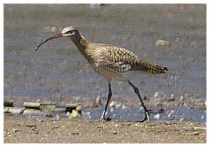

Curlew
An unusual visitor to the reservoir.

1927 - "Occasionally seen"
18/08/59 - Single bird
22/09/59 - 6 birds
05/11/59 - Single bird
27/12/61 - Single bird
18/02/62 - 2 birds
15/11/62 - Single bird
02/09/65 - 2 birds
14/09/67 - Single bird
10/07/69 - Single bird
19/08/83 - Single bird.
18/03/84 - Single bird. Seen also on 19/03
10/02/85 - Single bird
17/04/85 - Single bird, seen in flight
08/12/96 - Single bird, seen in flight. (BS) & (DH)
27/02/04 - Single bird circling over
08/08/07 - Single bird feeding in south-west corner of reservoir (KGH)